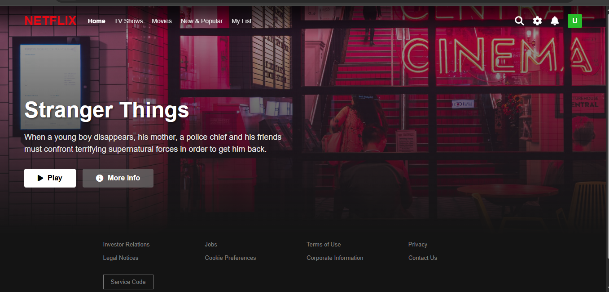
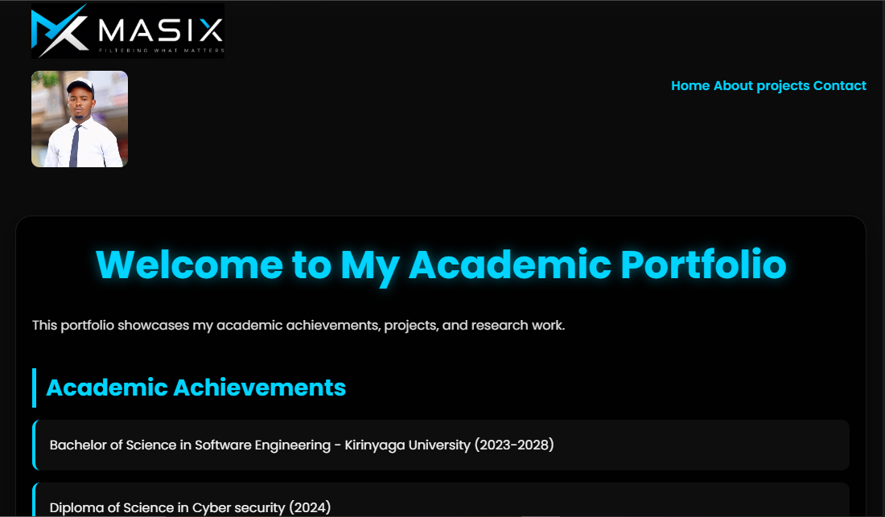

Projects
Here are some of my recent projects:
- Project 1: A web application working as a Netflix clone.
- Project 2: A personal company website named MASIX TECHNOLOGIES describing my company in the technology field.
- Project 3: A personal Academic Portfolio showcasing my academic requirements and aspirations.
- Project 4: A chatbot for customer support.
- Project 5: A data visualization tool for analyzing social media trends.
In this project, I developed a web application that mimics the functionality and design of Netflix. The application allows users to browse and stream movies and TV shows, create watchlists, and receive personalized recommendations based on their viewing history.

In this project, I created a personal company website for MASIX TECHNOLOGIES, a technology company that specializes in web development and software solutions. The website features information about the company's services, portfolio of past projects, and contact details for potential clients.

In this project, I developed a personal academic portfolio to showcase my academic achievements, projects, and research work. The portfolio includes sections for academic achievements, projects, research work, skills, and contact information.

In this project, I developed a chatbot for customer support using Dialogflow and JavaScript.
The chatbot is designed to assist customers with common inquiries and provide support 24/7.
But I flagged it down temporarily for maintenance.
In this project, I implemented a data visualization tool for analyzing social media trends
using D3.js and Python. The tool allows users to explore and visualize social media data
to identify trends and insights.
Flagged down for technical maintenance.
Academic Achievements
- Dean's List for Academic Excellence (2026-2027)
- First Place in the University Coding Competition (2026)
- Published a research paper on "The Impact of AI in Cybersecurity" in the International Journal of Computer Science (2026)
- Received a scholarship for outstanding academic performance (2028)
- Completed an internship at Orbit Chemicals Ltd, where I contributed to the development of a new software application (2026)
Skills
- Programming Languages: Java, Python, JavaScript, C++
- Web Development: React, Node.js, HTML/CSS
- Machine Learning: scikit-learn, TensorFlow, Keras
- Mobile App Development: Flutter, Firebase
- Data Visualization: D3.js, Tableau
Languages
- English (Fluent)
- Swahili (Native)
Interests
- Artificial Intelligence and Machine Learning
- Cybersecurity and Ethical Hacking
- Web and Mobile App Development
- Data Science and Analytics
- Technology for Social Good
Future Goals
- Complete my Bachelor's degree in Software Engineering with honors.
- Publish more research papers in reputable journals and conferences.
- Secure a full-time position at a leading technology company after graduation.
- Continue to develop my skills in artificial intelligence and machine learning.
- Contribute to open-source projects and give back to the tech community.